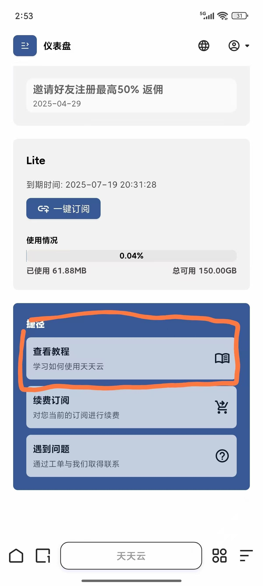
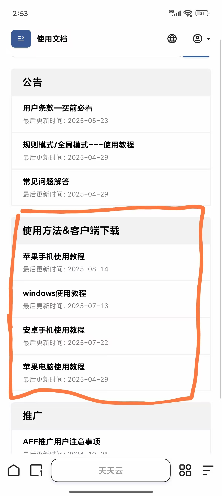
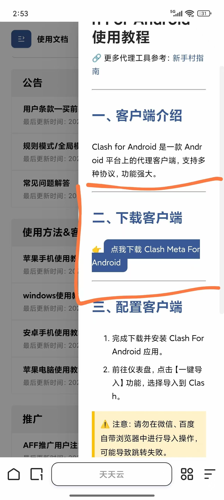
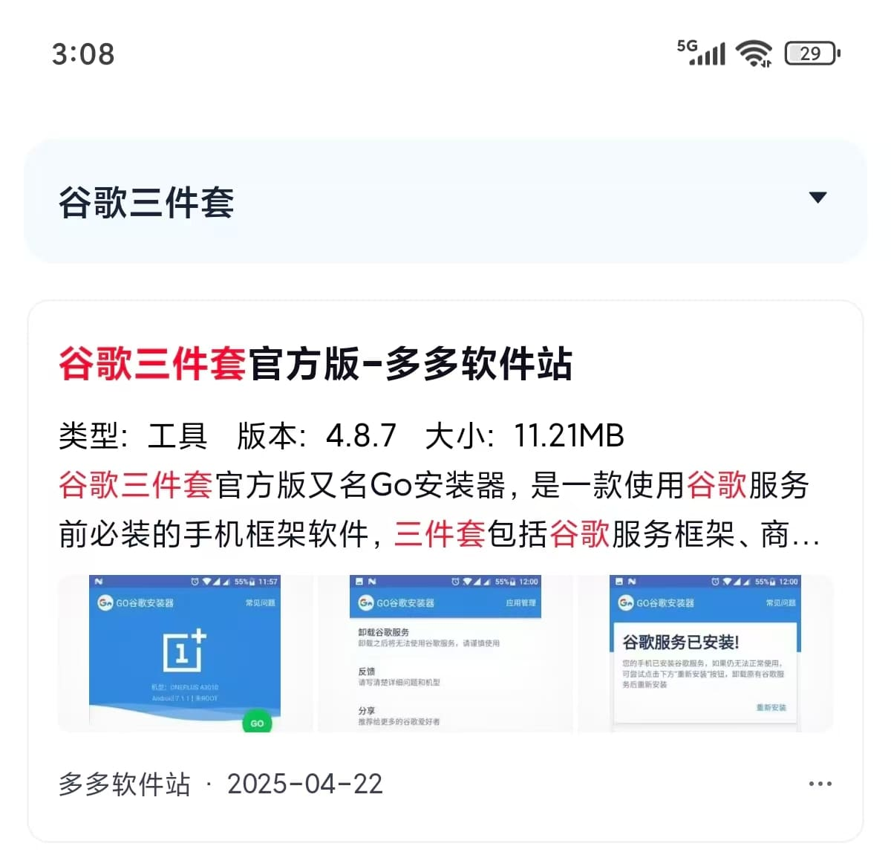
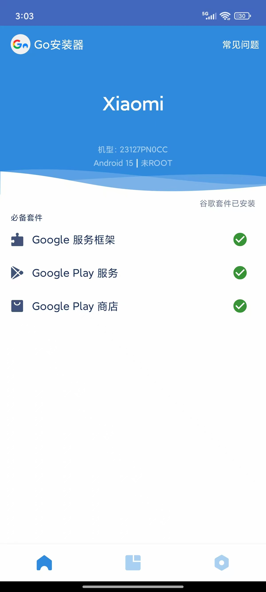

(购买节点的网站都提供了苹果加速器的安装方法，sing-box是免费的，小火箭不免费，有的网站提供含有小火箭的苹果账号有的没有，所以具体选什么还要看自己)
1.clash
买节点的网址：
天天云（适合买长期的，价格稍贵）：https://x1.huangwei.xn--6qq986b3xl/#/dashboard
性价比机场（价格很便宜但是节点较少，有些不稳定，适合对网络要求不高的app）：https://xingjiabijichang.vip/#/dashboard
软件下载：（以天天云为例，购买节点的网站都有安装包也有教程）
  2.樱花猫（个人比较推荐这个，因为节点很多，方便攒票看广告）
网址：https://sakura-cat3.com/dashboard
1.安卓用户
首先去浏览器下载谷歌三件套
安装完后有异常点修复
然后去应用商店下载谷歌play商店

下载完之后就可以在play商店下载投票所需软件（需要挂梯子哦）
要是以上方法不管用，找管理员要安大师的安装包,安卓可用安大师下载软件
苹果用户
首先创建一个外区ID，否则应用商店搜不到相应的软件

注册完之后用此账户在app store里下载